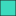
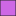
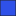

<!doctype html>
<html lang="en">
    <head>
        <meta charset="utf-8">
        <meta http-equiv="X-UA-Compatible" content="IE=edge">
        <meta name="viewport" content="initial-scale=1,user-scalable=no,maximum-scale=1,width=device-width">
        <meta name="mobile-web-app-capable" content="yes">
        <meta name="apple-mobile-web-app-capable" content="yes">
        <link rel="stylesheet" href="css/leaflet.css">
        <link rel="stylesheet" href="css/qgis2web.css"><link rel="stylesheet" href="css/fontawesome-all.min.css">
        <link rel="stylesheet" href="css/leaflet-measure.css">
        <style>
        html, body, #map {
            width: 100%;
            height: 100%;
            padding: 0;
            margin: 0;
        }
        </style>
        <title></title>
    </head>
    <body>
        <div id="map">
        </div>
        <script src="js/qgis2web_expressions.js"></script>
        <script src="js/leaflet.js"></script>
        <script src="js/leaflet.rotatedMarker.js"></script>
        <script src="js/leaflet.pattern.js"></script>
        <script src="js/leaflet-hash.js"></script>
        <script src="js/Autolinker.min.js"></script>
        <script src="js/rbush.min.js"></script>
        <script src="js/labelgun.min.js"></script>
        <script src="js/labels.js"></script>
        <script src="js/leaflet-measure.js"></script>
        <script src="data/Geologi_Plantungan_shp_1.js"></script>
        <script>
        var highlightLayer;
        function highlightFeature(e) {
            highlightLayer = e.target;

            if (e.target.feature.geometry.type === 'LineString') {
              highlightLayer.setStyle({
                color: '#ffff00',
              });
            } else {
              highlightLayer.setStyle({
                fillColor: '#ffff00',
                fillOpacity: 1
              });
            }
        }
        var map = L.map('map', {
            zoomControl:true, maxZoom:28, minZoom:1
        }).fitBounds([[-7.199474519375419,109.71762985260622],[-6.964342365224618,110.09814309527928]]);
        var hash = new L.Hash(map);
        map.attributionControl.setPrefix('<a href="https://github.com/tomchadwin/qgis2web" target="_blank">qgis2web</a> &middot; <a href="https://leafletjs.com" title="A JS library for interactive maps">Leaflet</a> &middot; <a href="https://qgis.org">QGIS</a>');
        var autolinker = new Autolinker({truncate: {length: 30, location: 'smart'}});
        var measureControl = new L.Control.Measure({
            position: 'topleft',
            primaryLengthUnit: 'meters',
            secondaryLengthUnit: 'kilometers',
            primaryAreaUnit: 'sqmeters',
            secondaryAreaUnit: 'hectares'
        });
        measureControl.addTo(map);
        document.getElementsByClassName('leaflet-control-measure-toggle')[0]
        .innerHTML = '';
        document.getElementsByClassName('leaflet-control-measure-toggle')[0]
        .className += ' fas fa-ruler';
        var bounds_group = new L.featureGroup([]);
        function setBounds() {
        }
        map.createPane('pane_GoogleSatelit_0');
        map.getPane('pane_GoogleSatelit_0').style.zIndex = 400;
        var layer_GoogleSatelit_0 = L.tileLayer('https://mt0.google.com/vt/lyrs=s&x={x}&y={y}&z={z}', {
            pane: 'pane_GoogleSatelit_0',
            opacity: 1.0,
            attribution: '',
            minZoom: 1,
            maxZoom: 28,
            minNativeZoom: 0,
            maxNativeZoom: 18
        });
        layer_GoogleSatelit_0;
        map.addLayer(layer_GoogleSatelit_0);
        function pop_Geologi_Plantungan_shp_1(feature, layer) {
            layer.on({
                mouseout: function(e) {
                    for (i in e.target._eventParents) {
                        e.target._eventParents[i].resetStyle(e.target);
                    }
                },
                mouseover: highlightFeature,
            });
            var popupContent = '<table>\
                    <tr>\
                        <td colspan="2">' + (feature.properties['SYMBOLS'] !== null ? autolinker.link(feature.properties['SYMBOLS'].toLocaleString()) : '') + '</td>\
                    </tr>\
                    <tr>\
                        <td colspan="2">' + (feature.properties['NM_LEMBAR'] !== null ? autolinker.link(feature.properties['NM_LEMBAR'].toLocaleString()) : '') + '</td>\
                    </tr>\
                    <tr>\
                        <td colspan="2">' + (feature.properties['NO_LEMBAR'] !== null ? autolinker.link(feature.properties['NO_LEMBAR'].toLocaleString()) : '') + '</td>\
                    </tr>\
                    <tr>\
                        <td colspan="2">' + (feature.properties['PROJECT'] !== null ? autolinker.link(feature.properties['PROJECT'].toLocaleString()) : '') + '</td>\
                    </tr>\
                    <tr>\
                        <td colspan="2">' + (feature.properties['REGION'] !== null ? autolinker.link(feature.properties['REGION'].toLocaleString()) : '') + '</td>\
                    </tr>\
                    <tr>\
                        <td colspan="2">' + (feature.properties['NAME'] !== null ? autolinker.link(feature.properties['NAME'].toLocaleString()) : '') + '</td>\
                    </tr>\
                    <tr>\
                        <td colspan="2">' + (feature.properties['FORMATION'] !== null ? autolinker.link(feature.properties['FORMATION'].toLocaleString()) : '') + '</td>\
                    </tr>\
                    <tr>\
                        <td colspan="2">' + (feature.properties['CLASS_LITH'] !== null ? autolinker.link(feature.properties['CLASS_LITH'].toLocaleString()) : '') + '</td>\
                    </tr>\
                    <tr>\
                        <td colspan="2">' + (feature.properties['T_CLASS_EN'] !== null ? autolinker.link(feature.properties['T_CLASS_EN'].toLocaleString()) : '') + '</td>\
                    </tr>\
                    <tr>\
                        <td colspan="2">' + (feature.properties['B_CLASS_EN'] !== null ? autolinker.link(feature.properties['B_CLASS_EN'].toLocaleString()) : '') + '</td>\
                    </tr>\
                    <tr>\
                        <td colspan="2">' + (feature.properties['CLASS_TECT'] !== null ? autolinker.link(feature.properties['CLASS_TECT'].toLocaleString()) : '') + '</td>\
                    </tr>\
                    <tr>\
                        <td colspan="2">' + (feature.properties['B_ERA'] !== null ? autolinker.link(feature.properties['B_ERA'].toLocaleString()) : '') + '</td>\
                    </tr>\
                    <tr>\
                        <td colspan="2">' + (feature.properties['B_PERIOD'] !== null ? autolinker.link(feature.properties['B_PERIOD'].toLocaleString()) : '') + '</td>\
                    </tr>\
                    <tr>\
                        <td colspan="2">' + (feature.properties['B_EPOCH'] !== null ? autolinker.link(feature.properties['B_EPOCH'].toLocaleString()) : '') + '</td>\
                    </tr>\
                    <tr>\
                        <td colspan="2">' + (feature.properties['T_ERA'] !== null ? autolinker.link(feature.properties['T_ERA'].toLocaleString()) : '') + '</td>\
                    </tr>\
                    <tr>\
                        <td colspan="2">' + (feature.properties['T_PERIOD'] !== null ? autolinker.link(feature.properties['T_PERIOD'].toLocaleString()) : '') + '</td>\
                    </tr>\
                    <tr>\
                        <td colspan="2">' + (feature.properties['T_EPOCH'] !== null ? autolinker.link(feature.properties['T_EPOCH'].toLocaleString()) : '') + '</td>\
                    </tr>\
                </table>';
            layer.bindPopup(popupContent, {maxHeight: 400});
        }

        function style_Geologi_Plantungan_shp_1_0(feature) {
            switch(String(feature.properties['NAME'])) {
                case 'Batuan Gunungapi Jembangan':
                    return {
                pane: 'pane_Geologi_Plantungan_shp_1',
                opacity: 1,
                color: 'rgba(35,35,35,1.0)',
                dashArray: '',
                lineCap: 'butt',
                lineJoin: 'miter',
                weight: 1.0, 
                fill: true,
                fillOpacity: 1,
                fillColor: 'rgba(60,219,190,1.0)',
                interactive: true,
            }
                    break;
                case 'Formasi Damar':
                    return {
                pane: 'pane_Geologi_Plantungan_shp_1',
                opacity: 1,
                color: 'rgba(35,35,35,1.0)',
                dashArray: '',
                lineCap: 'butt',
                lineJoin: 'miter',
                weight: 1.0, 
                fill: true,
                fillOpacity: 1,
                fillColor: 'rgba(206,103,229,1.0)',
                interactive: true,
            }
                    break;
                case 'Formasi Kaligetas':
                    return {
                pane: 'pane_Geologi_Plantungan_shp_1',
                opacity: 1,
                color: 'rgba(35,35,35,1.0)',
                dashArray: '',
                lineCap: 'butt',
                lineJoin: 'miter',
                weight: 1.0, 
                fill: true,
                fillOpacity: 1,
                fillColor: 'rgba(47,81,232,1.0)',
                interactive: true,
            }
                    break;
                case 'Formasi Kerek':
                    return {
                pane: 'pane_Geologi_Plantungan_shp_1',
                opacity: 1,
                color: 'rgba(35,35,35,1.0)',
                dashArray: '',
                lineCap: 'butt',
                lineJoin: 'miter',
                weight: 1.0, 
                fill: true,
                fillOpacity: 1,
                fillColor: 'rgba(158,232,139,1.0)',
                interactive: true,
            }
                    break;
                case 'Kipas Aluvial':
                    return {
                pane: 'pane_Geologi_Plantungan_shp_1',
                opacity: 1,
                color: 'rgba(35,35,35,1.0)',
                dashArray: '',
                lineCap: 'butt',
                lineJoin: 'miter',
                weight: 1.0, 
                fill: true,
                fillOpacity: 1,
                fillColor: 'rgba(237,198,27,1.0)',
                interactive: true,
            }
                    break;
                default:
                    return {
                pane: 'pane_Geologi_Plantungan_shp_1',
                opacity: 1,
                color: 'rgba(35,35,35,1.0)',
                dashArray: '',
                lineCap: 'butt',
                lineJoin: 'miter',
                weight: 1.0, 
                fill: true,
                fillOpacity: 1,
                fillColor: 'rgba(221,91,115,1.0)',
                interactive: true,
            }
                    break;
            }
        }
        map.createPane('pane_Geologi_Plantungan_shp_1');
        map.getPane('pane_Geologi_Plantungan_shp_1').style.zIndex = 401;
        map.getPane('pane_Geologi_Plantungan_shp_1').style['mix-blend-mode'] = 'normal';
        var layer_Geologi_Plantungan_shp_1 = new L.geoJson(json_Geologi_Plantungan_shp_1, {
            attribution: '',
            interactive: true,
            dataVar: 'json_Geologi_Plantungan_shp_1',
            layerName: 'layer_Geologi_Plantungan_shp_1',
            pane: 'pane_Geologi_Plantungan_shp_1',
            onEachFeature: pop_Geologi_Plantungan_shp_1,
            style: style_Geologi_Plantungan_shp_1_0,
        });
        bounds_group.addLayer(layer_Geologi_Plantungan_shp_1);
        map.addLayer(layer_Geologi_Plantungan_shp_1);
        var baseMaps = {};
        L.control.layers(baseMaps,{'Geologi_Plantungan_shp<br /><table><tr><td style="text-align: center;"></td><td>Batuan Gunungapi Jembangan</td></tr><tr><td style="text-align: center;"></td><td>Formasi Damar</td></tr><tr><td style="text-align: center;"></td><td>Formasi Kaligetas</td></tr><tr><td style="text-align: center;"></td><td>Formasi Kerek</td></tr><tr><td style="text-align: center;"></td><td>Kipas Aluvial</td></tr><tr><td style="text-align: center;"></td><td></td></tr></table>': layer_Geologi_Plantungan_shp_1,"Google Satelit": layer_GoogleSatelit_0,}).addTo(map);
        setBounds();
        </script>
    </body>
</html>
